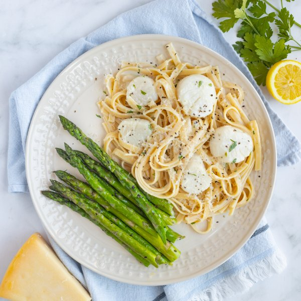

Scallop Fettuccine Alfredo with Lemon, Parsley & Sautéed Asparagus

Total Time
25 min
Nutrition (Per Serving)
694.5 kcalCalories
39.2 gProtein
67.2 gCarbs
30.2 gFat
Full nutrition table
| Calories | 694.5 kcal |
| Total fat | 30.2 g |
| Saturated fat | 16.8 g |
| Trans fat | 0.9 g |
| Cholesterol | 132 mg |
| Sodium | 706.3 mg |
| Carbohydrates | 67.2 g |
| Fiber | 5.4 g |
| Sugars | 6.4 g |
| Protein | 39.2 g |
| Potassium | 902.6 mg |
| Calcium | 117 mg |
| Iron | 5.3 mg |
| Vitamin A | 1902 IU |
| Vitamin C | 31.7 mg |
| Vitamin D | 20.5 IU |
Cookware
Ingredients
- 2 small bunchesasparagus
- 10 ozfettuccine pasta
- 8 fl ozheavy whipping cream
- 1 small bunchItalian (flat-leaf) parsley
- 1lemon
- 2 ozParmesan cheese
- 1 ½ lbsea scallops
- black pepper
- extra virgin olive oil
- salt
Steps
- Fill a large pot halfway with hot water (from the tap). Add salt, cover, and bring to a boil over high heat. Once boiling, uncover, add pasta, and stir for a few seconds; cook until desired firmness, 8-10 minutes. Drain pasta and set aside.1 tsp salt
10 oz fettuccine pasta - Meanwhile, wash and dry the fresh produce.2 small bunches asparagus
1 small bunch Italian (flat-leaf) parsley
1 lemon - Preheat a large skillet over medium-high heat.
- While the skillet heats up, snap (or cut) off woody ends of asparagus.
- Once the skillet is hot, add oil and swirl to coat the bottom. Add asparagus, salt, and pepper; cook, turning occasionally, until bright green and tender-crisp, 3-4 minutes. Transfer to a plate and cover with aluminum foil to keep warm. (Reserve skillet for later use.)2 tsp extra virgin olive oil
½ tsp salt
¼ tsp black pepper - Meanwhile, finely grate Parmesan. Place in a small bowl, setting aside a small handful for serving.2 oz Parmesan cheese
- Return skillet to medium heat. Add Parmesan, cream, salt, and pepper; cook, stirring occasionally, until cheese melts and sauce is combined, 1-2 minutes.8 fl oz (1 cup) heavy whipping cream
½ tsp salt
¼ tsp black pepper - While the sauce is cooking, pat the scallops dry with paper towels and place on another plate; season with salt and pepper on both sides.1 ½ lb sea scallops
½ tsp salt
¼ tsp black pepper - Add scallops to the skillet with the sauce and gently stir to coat. Cook, stirring occasionally, until scallops are opaque, about 5 minutes.
- Meanwhile, shave parsley leaves off the stems; discard stems and mince the leaves.
- When the scallops are done, juice lemon into the skillet. Add drained pasta and parsley. Reduce heat to low and continue to cook, tossing occasionally, until sauce thickens, 2-3 minutes more. Remove from heat.
- To serve, divide scallop fettuccine and asparagus between plates. Top pasta with reserved Parmesan and enjoy!